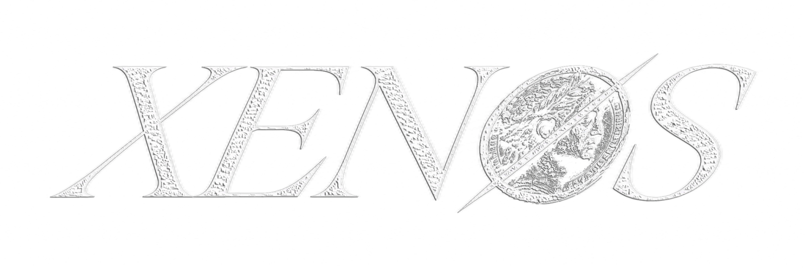

A CYBERPUNK INTERACTIVE STORY

오늘도 쾌적한 하루를.
계약 앞에서는 누구나 평등하다.
단, 계약의 가격은 누구에게나 평등하지는 않다.
ARTIFICIAL CLIMATE / NO SEASONSYOUR STORY BEGINS BELOW.
A CYBERPUNK INTERACTIVE STORY

오늘도 쾌적한 하루를.
계약 앞에서는 누구나 평등하다.
단, 계약의 가격은 누구에게나 평등하지는 않다.